RBAC 관리#
RBAC(역할 기반 접근 제어) 관리를 통해 슈퍼 관리자는 세분화된 세부 권한을 묶은 역할을 정의하고 사용자에게 할당할 수 있습니다. RBAC를 사용하면 Backend.AI 시스템 전반에서 특정 사용자가 다양한 리소스에 대해 수행할 수 있는 동작을 제어할 수 있습니다.
RBAC 관리 페이지에 접근하려면 사이드바 메뉴의 관리자 설정 섹션에서 RBAC 관리를 클릭합니다.
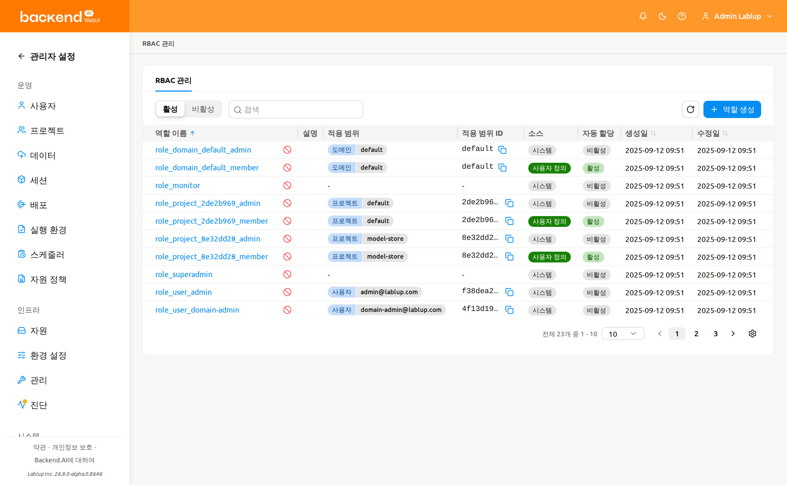
역할 목록#
역할 목록 페이지는 모든 역할을 테이블 형태로 표시합니다. 페이지 상단의 컨트롤을 사용하여 역할을 필터링, 검색 및 정렬할 수 있습니다.
- 상태 필터: 활성 및 비활성 역할을 전환하는 세그먼트 컨트롤입니다. 기본적으로 활성이 선택되어 있습니다.
- 속성 필터: 목록을 좁히는 속성 필터입니다. 필터 입력은 선택한 속성에 따라 달라집니다. 다음 속성을 사용할 수 있습니다:
- 이름: 역할 이름으로 검색하는 자유 형식 텍스트입니다.
- 소스: 사용 가능한 값(시스템 / 사용자 정의)을 자유 형식 텍스트 대신 선택형 입력으로 노출합니다.
- 할당된 사용자: 사용자 선택기로, 선택한 사용자에게 할당된 역할만 표시하도록 목록을 필터링합니다. 생성된 조건 태그에는 사용자의 이메일이 표시됩니다.
- 적용 범위: RBAC 적용 범위 타입(예: 도메인, 프로젝트, 사용자)을 나열하는 선택형 입력입니다.
- 적용 범위 ID: 원시 적용 범위 UUID로 검색하는 자유 형식 텍스트입니다.
- 역할 생성: 새로운 사용자 정의 역할을 생성하는 버튼입니다.
테이블에는 다음 열이 표시됩니다:
- 역할 이름: 역할의 이름입니다. 이름을 클릭하면 역할 상세 패널이 열립니다.
- 설명: 역할의 목적에 대한 간략한 설명입니다.
- 적용 범위: 역할에 처음 할당된 적용 범위의 타입입니다. 역할에 여러 적용 범위가 할당된 경우
+N표시가 함께 표시됩니다. - 적용 대상 ID: 역할에 처음 할당된 적용 범위의 원시 ID입니다. 여러 적용 범위가 할당된 경우
+N표시가 함께 표시됩니다. - 소스: 역할이 시스템(사전 정의) 또는 사용자 정의(사용자 생성)인지 나타냅니다.
- 자동 할당: 역할이 등록된 적용 범위에 사용자가 추가될 때 자동으로 역할이 할당되는지 여부를 나타냅니다. 자동 할당이 활성화된 경우 활성, 비활성화된 경우 비활성으로 표시됩니다.
- 생성일: 역할이 생성된 날짜와 시간입니다.
- 수정일: 역할이 마지막으로 수정된 날짜와 시간입니다.
시스템 역할과 사용자 정의 역할#
역할은 두 가지 소스 유형으로 분류됩니다:
- 시스템: 자동 생성되는 역할입니다. 이름이나 설명을 편집할 수 없지만, 사용자 할당 및 세부 권한을 관리할 수 있습니다.
- 사용자 정의: 슈퍼 관리자가 생성한 역할입니다. 이름, 설명, 할당, 적용 범위, 세부 권한 등 모든 항목을 편집할 수 있습니다.
역할 생성#
역할을 생성할 때는 적용 범위를 먼저 정의합니다. 적용 범위는 역할을 특정 리소스 엔티티(도메인, 프로젝트, 사용자 등)에 바인딩하여, 이후 추가되는 모든 세부 권한이 여기에서 정의한 적용 범위 내에서만 작동하도록 제한합니다.
새로운 사용자 정의 역할을 생성하려면:
- 역할 목록 페이지 오른쪽 상단의 역할 생성 버튼을 클릭합니다
- 생성 모달에서 다음 필드를 입력합니다:
- 역할 이름 (필수): 고유한 역할 이름을 입력합니다
- 설명 (선택): 역할의 목적에 대한 설명을 입력합니다
- 자동 할당 (선택): 활성화하면 역할이 등록된 적용 범위에 사용자가 추가될 때 자동으로 역할이 부여됩니다. 기본적으로 비활성화되어 있습니다.
- 적용 범위 / 적용 대상 (필수, 최소 1개): 각 적용 범위 행에서 적용 범위를 선택한 후 해당 범위 내의 특정 적용 대상을 선택합니다. 추가 버튼으로 적용 범위 행을 더 추가하거나 삭제 아이콘으로 행을 제거할 수 있습니다. 최소 하나의 적용 범위를 추가해야 합니다.
- 확인을 클릭하여 역할을 생성합니다
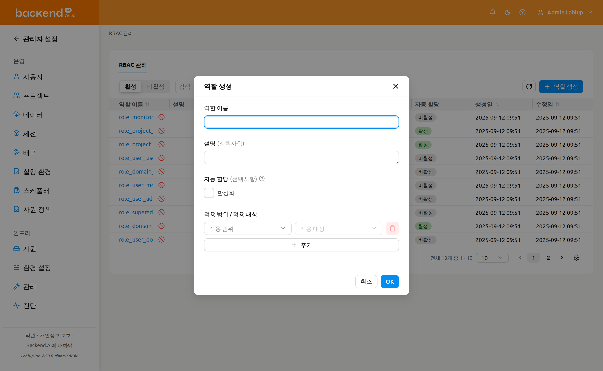
역할 생성 시점에 설정하는 적용 범위와 적용 대상은 그 자체로 어떤 권한을 부여하지 않습니다. 대신 이후 이 역할에 세부 권한을 추가할 때 선택할 수 있는 적용 범위 / 적용 대상의 후보를 미리 정의하는 역할을 합니다. 즉, 역할 생성 단계에서는 이 역할의 세부 권한이 가질 수 있는 적용 범위와 적용 대상의 범주를 미리 한정하는 것이며, 세부 권한은 여기에서 정의한 적용 범위와 적용 대상 안에서만 설정할 수 있습니다.
적용 범위는 역할 생성 시점에 정의되며 이후 역할 상세 패널에서 수정할 수 없습니다. 역할을 생성하기 전에 적용 범위를 신중하게 계획하세요.
역할 상세 보기#
역할에 대한 상세 정보를 확인하려면 테이블에서 역할 이름을 클릭합니다. 페이지 오른쪽에 상세 패널이 열립니다.
패널 헤더에는 역할 이름이 표시되며 사용자 정의 역할의 경우 편집 버튼이 제공됩니다. 상세 섹션에는 다음 메타데이터가 표시됩니다:
- 소스: 시스템 또는 사용자 정의
- 상태: 활성 또는 비활성
- 자동 할당: 자동 할당이 활성 또는 비활성 여부를 나타냅니다. 활성 상태이면 역할이 등록된 적용 범위 중 하나에 사용자가 추가될 때 자동으로 역할이 부여됩니다.
- 생성일: 생성 시간
- 수정일: 마지막 수정 시간
- 설명: 역할의 설명
메타데이터 아래에는 권한과 역할 할당 두 개의 탭이 있습니다. 기본적으로 권한 탭이 선택되어 있습니다.
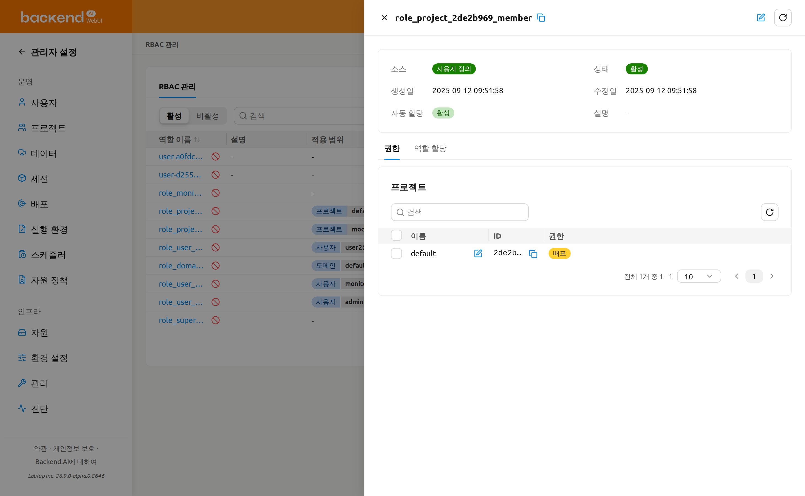
역할 편집#
사용자 정의 역할의 이름, 설명 또는 자동 할당 설정을 편집하려면:
- 테이블에서 역할 이름을 클릭하여 상세 패널을 엽니다
- 패널 헤더의 편집 버튼(연필 아이콘)을 클릭합니다
- 편집 모달에서 다음 필드를 수정합니다:
- 역할 이름: 역할의 이름
- 설명: 역할의 목적에 대한 설명
- 자동 할당: 활성화하면 역할이 등록된 적용 범위에 사용자가 추가될 때 자동으로 역할이 부여됩니다.
- 확인을 클릭하여 변경 사항을 저장합니다
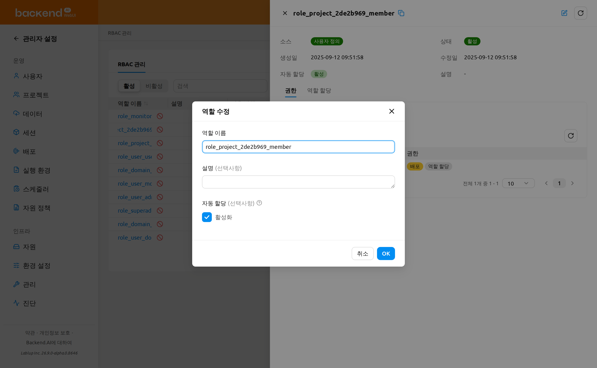
편집 버튼은 사용자 정의 역할에서만 사용할 수 있습니다. 시스템 역할의 이름이나 설명은 수정할 수 없습니다. 또한 역할 생성 후에는 어느 경우에도 적용 범위를 수정할 수 없습니다.
세부 권한 관리#
역할 상세 패널의 권한 탭은 역할의 적용 범위와 세분화된 세부 권한을 결합한 통합 상세 보기입니다. 역할이 사용하는 적용 범위 타입마다 하나의 카드를 렌더링하며 각 카드는 해당 적용 범위 타입의 적용 범위와 그 위에 부여된 권한을 함께 표시합니다.
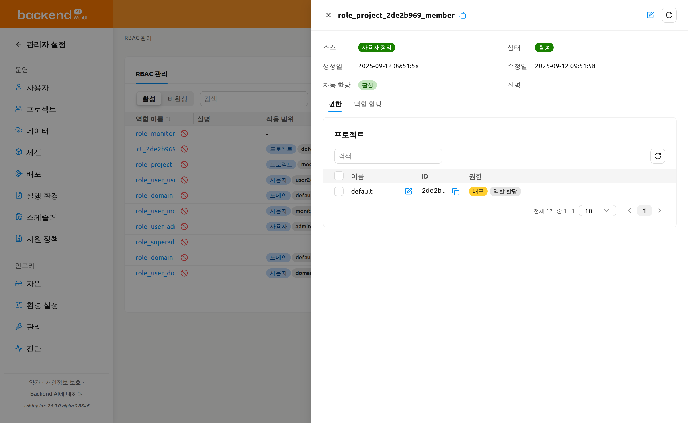
역할이 참조할 수 있는 적용 범위는 역할 생성 시에 정의되며 이후에는 읽기 전용입니다. 역할 상세 패널에서 변경할 수 없습니다. 권한 탭에서는 적용 범위가 각 적용 범위 타입 카드 내부의 행으로 나타납니다. 역할의 적용 범위를 변경하려면 원하는 적용 범위를 가진 새 역할을 생성해야 합니다.
적용 범위 타입 카드#
권한 탭에는 역할이 사용하는 적용 범위 타입(예: 도메인, 프로젝트, 사용자)마다 하나의 카드가 표시됩니다. 역할이 사용하지 않는 적용 범위 타입은 숨겨지며 카드 제목은 현지화된 적용 범위 타입 이름입니다. 각 카드는 다음을 포함합니다:
- 적용 범위 ID 필터: 원시 적용 범위 UUID로 카드의 행을 좁히는 속성 필터입니다. 현지화된 적용 범위 이름으로는 검색할 수 없습니다.
- 새로 고침 버튼: 카드의 행을 다시 불러오고 권한 태그를 다시 계산합니다.
- 적용 범위 테이블: 이 타입에 속하는 역할의 적용 범위를 다음 열과 함께 나열합니다:
- 이름: 현지화된 적용 범위 이름(예: 도메인, 프로젝트 또는 사용자의 표시 이름)이며, 해당 적용 범위에 대한 권한 편집 모달을 여는 인라인 편집 동작이 함께 표시됩니다.
- ID: 적용 범위 UUID입니다.
- 권한: 권한 타입마다 하나의 태그가 부여 상태에 따라 색상으로 표시됩니다(아래 참조). 적용 범위 타입에 설정 가능한 엔티티가 없으면 이 열은
-로 표시됩니다.
- 페이지네이션: 적용 범위가 많을 때 카드의 적용 범위를 페이지로 나눕니다.
역할에 적용 범위가 전혀 없으면 탭에는 카드 대신 역할이 적용될 범위가 설정되지 않았습니다 메시지가 표시됩니다.
부여 상태 태그#
권한 열에서 각 권한 타입 태그는 해당 적용 범위에 대해 그 타입의 동작이 얼마나 부여되었는지에 따라 색상으로 표시됩니다:
- 모두 허용됨(초록색): 해당 권한 타입의 모든 동작이 부여되었습니다.
- 일부 허용됨(노란색): 일부 동작만 부여되었고 전부는 아닙니다.
- 허용되지 않음(색상 없음): 어떤 동작도 부여되지 않았습니다.
태그 위에 마우스를 올리면 상태 라벨을 확인할 수 있습니다.
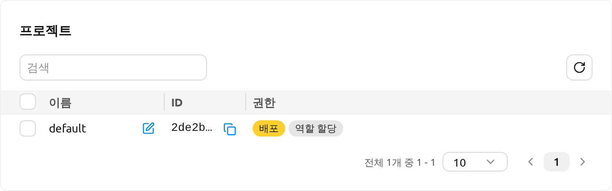
세부 권한 이해하기#
각 세부 권한은 네 가지 구성 요소로 이루어져 있습니다:
- 적용 범위: 세부 권한이 적용될 유효 범위(예: 도메인, 프로젝트, 사용자)
- 적용 대상: 유효 범위 내의 특정 엔티티(예: 특정 도메인 이름, 특정 프로젝트)
- 권한 타입: 권한의 적용 유효 범위 안에서 동작이 수행되는 대상입니다.
- 동작: 권한 타입에 허용되는 동작입니다. 선택한 권한 타입에 따라 허용되는 동작만 필터링되어 표시됩니다. 동작은 두 가지 카테고리로 그룹화됩니다:
- 직접 수행: 생성, 조회, 수정, 삭제, 영구 삭제
- 타인에게 위임: 모든 권한 위임, 조회 권한 위임, 수정 권한 위임, 삭제 권한 위임, 영구 삭제 권한 위임
각 세부 권한의 적용 범위 / 적용 대상 조합은 역할의 적용 범위 항목에서 상속됩니다. 역할 생성 시에 정의된 적용 범위에 대해서만 세부 권한을 부여할 수 있습니다. 역할의 범위를 넓히려면 적용 범위가 추가된 새 역할을 생성해야 합니다.
세부 권한 설정 예시#
다음은 네 가지 구성 요소가 어떻게 함께 작동하는지 이해하는 데 도움이 되는 일반적인 세부 권한 설정 예시입니다. 적용 범위 / 적용 대상 열은 세부 권한이 재사용하는 역할 수준의 적용 범위를 나타냅니다.
| 시나리오 | 적용 범위 / 적용 대상 | 권한 타입 | 동작 |
|---|---|---|---|
| 특정 프로젝트에서 스토리지 폴더 생성 허용 | 프로젝트 / my-project | 폴더 | 생성 |
| 특정 도메인 내 모든 세션 조회 허용 | 도메인 / default | 세션 | 조회 |
| 특정 도메인 내 모델 서비스 관리 허용 | 도메인 / default | 모델 서비스 | 생성, 조회, 수정 |
| 특정 도메인 내 컨테이너 이미지 삭제 허용 | 도메인 / default | 이미지 | 삭제 |
적용 범위 권한 수정(단일 적용 범위)#
세부 권한은 각 행이 권한 타입이고 각 셀이 동작 체크박스인 그리드 기반 모달을 통해 적용 범위별로 수정합니다.
- 권한 탭에서 적용 범위 타입 카드를 열고 변경할 적용 범위 행의 편집 동작을 클릭합니다.
- {적용 범위 타입} 권한 수정 모달이 열리며, 적용 범위 이름이 부제로 표시됩니다. 다음과 같은 그리드가 표시됩니다:
- 행은 적용 범위 타입에 유효한 권한 타입입니다.
- 열은 직접 수행(생성, 조회, 수정, 삭제, 영구 삭제)과 타인에게 위임(모두, 조회, 수정, 삭제, 영구 삭제) 그룹으로 나뉩니다.
- 권한 매트릭스가 지원하지 않는 셀은
-로 표시되며 해당 권한은 할당이 불가능합니다. 툴팁이 나타납니다.
- 각 체크박스는 적용 범위에 현재 부여된 동작에 맞춰 미리 선택되어 있습니다. 셀을 선택하거나 해제하여 허용 항목을 변경합니다.
- 저장을 클릭합니다. 변경 사항은 적용 범위의 현재 부여 상태와 대조되어 새로 선택한 셀은 부여되고 해제한 셀은 제거됩니다.
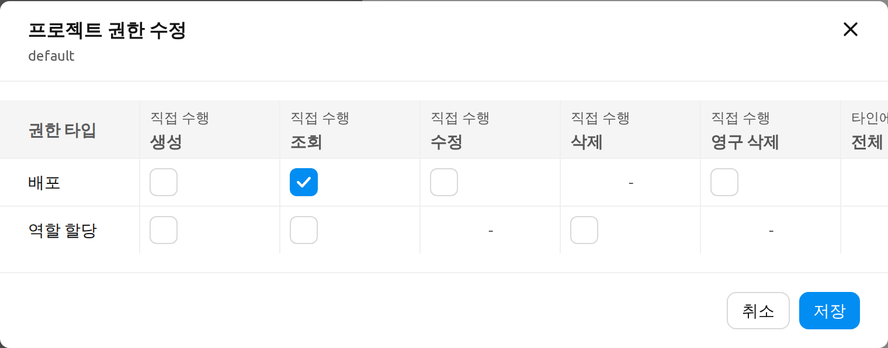
세부 권한 수정은 되돌릴 수 있는 작업입니다. 언제든지 모달을 다시 열어 그리드를 변경할 수 있으므로, 저장 시 이름을 입력해 확인하는 대신 일반 저장 버튼을 사용합니다.
여러 적용 범위 권한 수정(일괄)#
같은 타입의 여러 적용 범위에 동일한 권한 변경을 한 번에 적용할 수 있습니다.
- 적용 범위 타입 카드에서 행 체크박스를 사용하여 두 개 이상의 적용 범위를 선택합니다. 선택 개수 라벨이 나타나면 그 옆의 연필(권한 수정) 컨트롤을 사용하여 일괄 모달을 엽니다.
- {적용 범위 타입} 권한 일괄 수정 모달이 열립니다. 모든 셀은 유지 상태로 시작합니다. 건드리지 않은 셀은 선택한 각 적용 범위의 기존 값을 그대로 유지하며, 편집 모드로 전환한 셀만 선택한 모든 적용 범위에 적용됩니다.
- 셀을 클릭하여 편집 모드로 전환합니다(선택된 상태로 시작). 선택하거나 해제하여 모든 선택된 적용 범위에 적용할 값을 설정합니다.
- 저장을 클릭하여 선택한 모든 적용 범위에 변경 사항을 적용합니다.
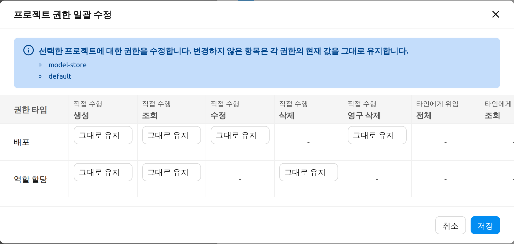
변경 없음 및 부분 실패 동작#
권한 변경을 저장할 때:
- 변경 사항이 없으면 모달은 요청을 보내지 않고 닫히며 변경사항이 없습니다. 메시지가 표시됩니다.
- 성공하면 세부 권한이 저장되었습니다. 메시지가 표시되고 카드의 태그가 다시 계산됩니다.
- 부분 실패 시에는 모달이 열린 상태로 유지되고 실패한 셀이 표시됩니다. 일괄 오류 모달에 실패한 각 요청(대상 적용 범위, 권한, 오류 메시지)과 성공 및 실패 개수가 나열됩니다. 그리드를 조정한 후 다시 저장하면 실패한 셀만 재시도할 수 있습니다.
사용자 할당 관리#
상세 패널의 역할 할당 탭에서 해당 역할에 할당된 사용자를 확인할 수 있습니다.
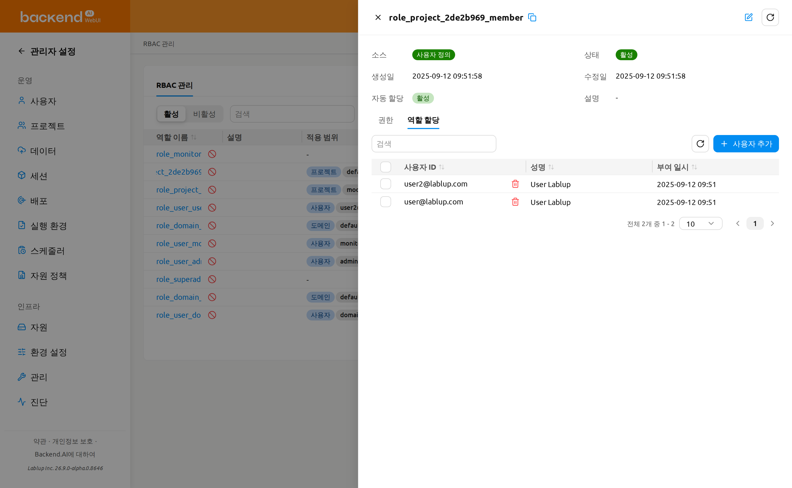
역할에 사용자 추가#
- 상세 패널을 열고 역할 할당 탭을 선택합니다
- 사용자 추가 버튼을 클릭합니다
- 모달에서 이메일이나 이름으로 사용자를 검색합니다
- 체크박스를 사용하여 한 명 이상의 사용자를 선택합니다
- 추가를 클릭하여 선택한 사용자를 역할에 할당합니다
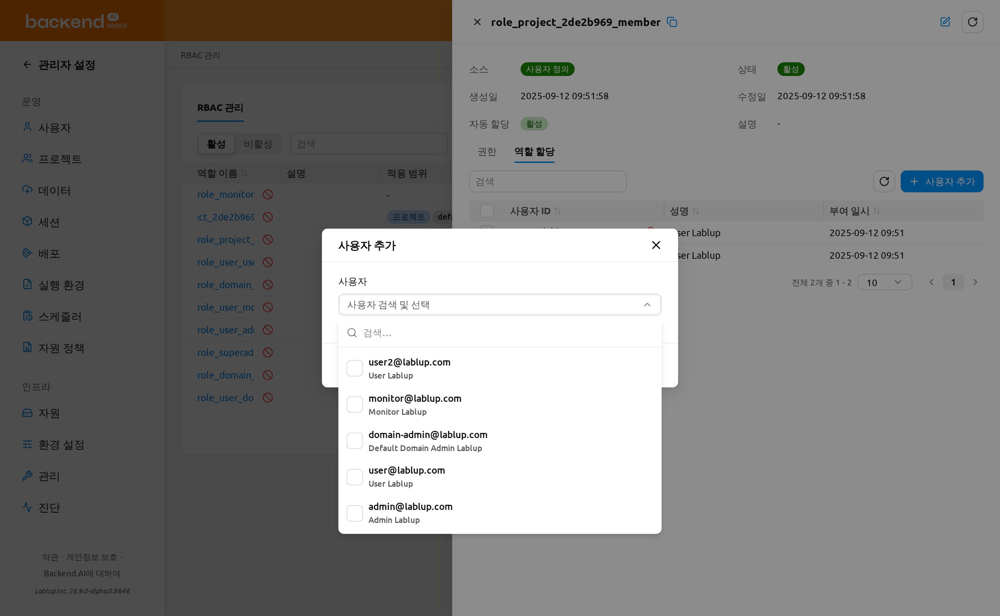
사용자 추가는 일괄 작업입니다. 한 번에 여러 사용자를 선택하여 모두 한꺼번에 할당할 수 있습니다. 일부 할당이 실패하면 모달이 열린 상태로 유지되며 일괄 오류 모달에 실패한 각 사용자와 오류 메시지, 성공 및 실패 개수가 나열됩니다. 성공적으로 할당된 사용자는 선택에서 지워지므로 실패한 사용자만 선택된 상태로 남아 추가를 다시 클릭하여 해당 사용자만 재시도할 수 있습니다.
시스템 역할과 할당 제한#
시스템이 생성한 프로젝트 관리자 역할(소스가 시스템인 role_project_<project_id>_admin 역할)에는 역할 할당 탭에서 사용자를 직접 할당하거나 해제할 수 없습니다. 이 탭에는 시스템에 의해 자동으로 생성된 역할은 사용자를 직접 할당하거나 할당 해제할 수 없습니다. 경고 알림이 표시되며 할당 테이블은 읽기 전용입니다(사용자 추가 및 해제 컨트롤이 숨겨집니다).
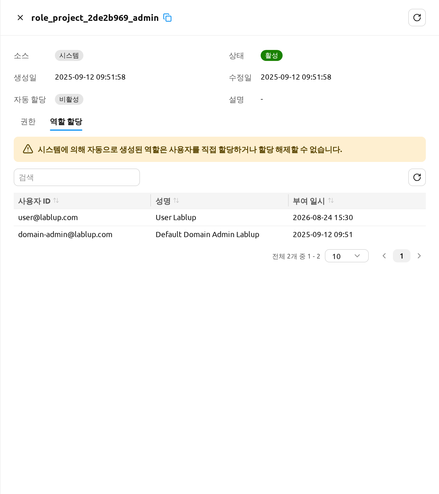
프로젝트를 관리할 사용자를 지정하려면 대신 프로젝트 페이지의 프로젝트 관리자 권한 설정을 사용하세요. 프로젝트 관리자 기능 챕터의 프로젝트 관리자 권한 설정과 아래의 프로젝트 관리자 권한 부여를 참고하세요.
역할에서 사용자 해제#
한 명의 사용자를 해제하거나 여러 명의 사용자를 한 번에 해제할 수 있습니다.
한 명의 사용자를 해제하려면:
- 역할 할당 탭에서 사용자 행 위에 마우스를 올린 후 사용자 옆의 해제(휴지통) 아이콘을 클릭합니다.
- 사용자 해제 확인 모달이 열립니다. 목록에 표시된 사용자를 확인한 후 사용자 해제를 클릭하여 확정하거나 취소를 눌러 닫습니다.
여러 명의 사용자를 한 번에 해제하려면:
- 역할 할당 탭에서 체크박스를 사용하여 제거할 사용자를 선택합니다. 해제 컨트롤 옆에 선택된 행 수를 나타내는 선택 개수 라벨이 표시되며, 해당 라벨의 선택 해제 컨트롤을 사용하여 모든 행의 선택을 해제할 수 있습니다.
- 하나 이상의 행이 선택되면 나타나는 일괄 사용자 해제 버튼(휴지통 아이콘)을 클릭합니다.
- 사용자 해제 확인 모달에서 목록에 표시된 사용자를 확인한 후 사용자 해제를 클릭하여 확정하거나 취소를 눌러 닫습니다.
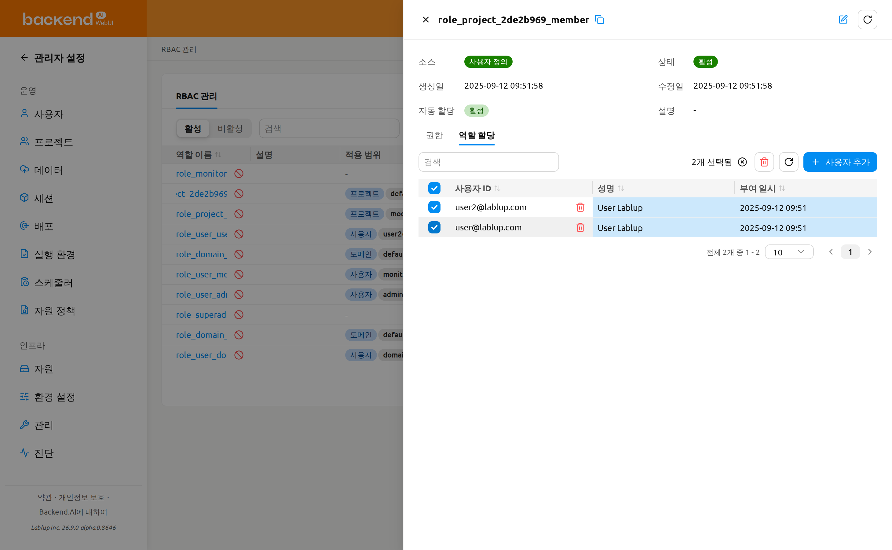
사용자를 해제하면 해당 사용자의 역할 할당만 제거되며 역할 자체와 다른 할당은 그대로 유지됩니다.
역할 할당 해제는 역할 할당 탭에서 사용자를 다시 추가하면 복구할 수 있습니다.
프로젝트 관리자 권한 부여#
프로젝트를 생성하면 role_project_<project_id>_admin이라는 전용 역할이 함께 생성되며 여기서 <project_id>는 해당 프로젝트 UUID의 앞 8자리입니다. 이 역할에 할당된 사용자는 그 프로젝트에 대한 프로젝트 관리자 권한을 얻습니다. 즉, 시스템 전반의 슈퍼 관리자 권한을 갖지 않고도 해당 프로젝트의 사용자, 세션, 배포, 스토리지 폴더를 관리할 수 있습니다.
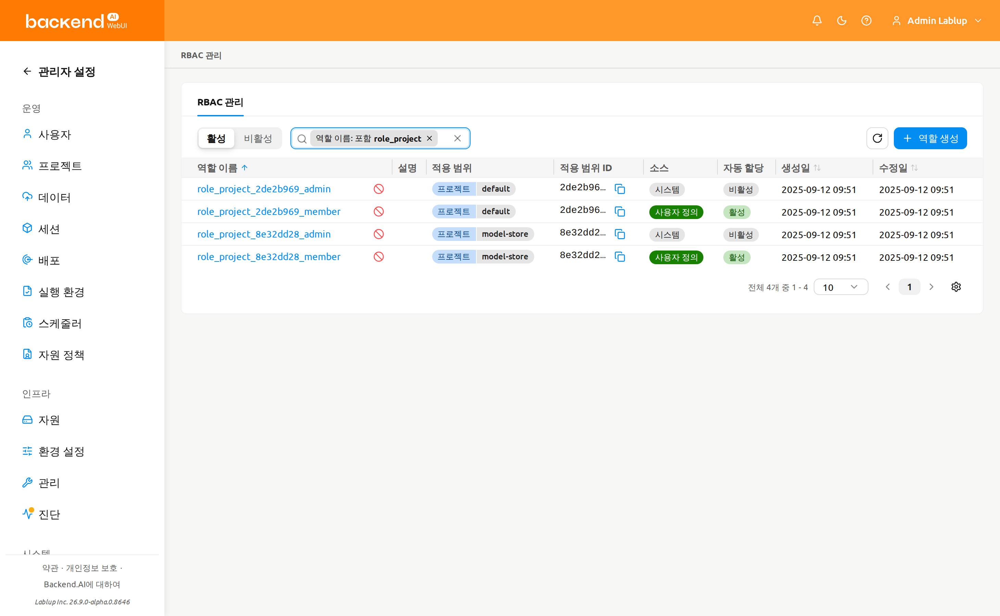
프로젝트 관리자 권한은 프로젝트 관리자 기능 챕터의 프로젝트 관리자 권한 설정에서 설명하는 프로젝트 관리자 페이지의 프로젝트 관리자 권한 설정 원클릭 흐름을 통해 부여하고 회수합니다. role_project_<project_id>_admin 역할은 시스템 역할이므로, 여기의 역할 할당 탭은 읽기 전용이며 확인용으로 제공됩니다. 역할을 열어 현재 프로젝트 관리자 권한을 가진 사용자를 검토할 수 있습니다. 프로젝트 관리자 권한 설정 모달은 RBAC 바로 가기를 통해 이 역할의 상세 패널로 다시 연결됩니다.
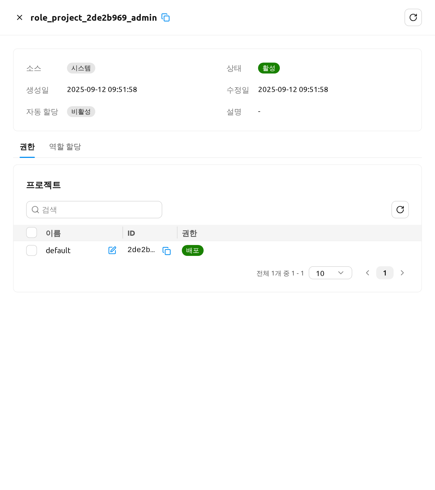
권한이 부여되면 사용자에게는 즉시 프로젝트 관리자 권한이 적용됩니다. 다음에 헤더의 프로젝트 드롭다운을 열면 해당 프로젝트 옆에 프로젝트 관리자 배지가 표시되며 프로젝트 관리자 기능 챕터에서 설명한 프로젝트 관리자 전용 사이드바 항목도 함께 나타납니다.